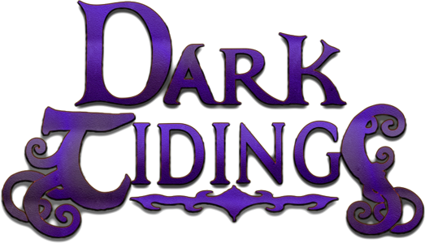
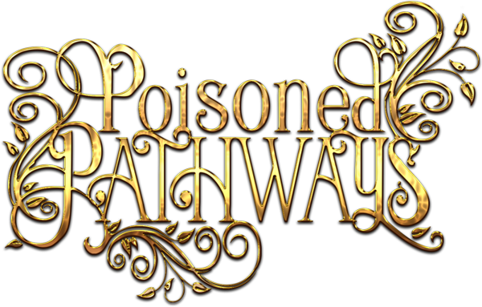
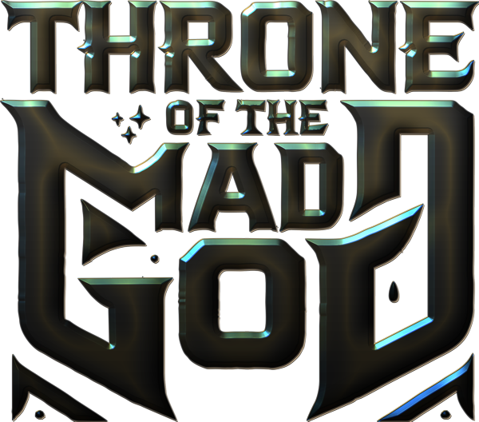

Acifer
Expanding the world of Baldur’s Gate 1&2. I specialize in creating new areas and quests that blend seamlessly into the Forgotten Realms.
My mods:
A new city district in Athkatla and a plane-spanning adventure.

Set sail to a remote island far off the coast of Amn.
A new quest in the city of Baldur's Gate.

Explore a haunted elven ruin and a tranquil forest village in BG2EE.

Explore an ancient dwarven ruin in the Troll Mountains.